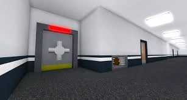
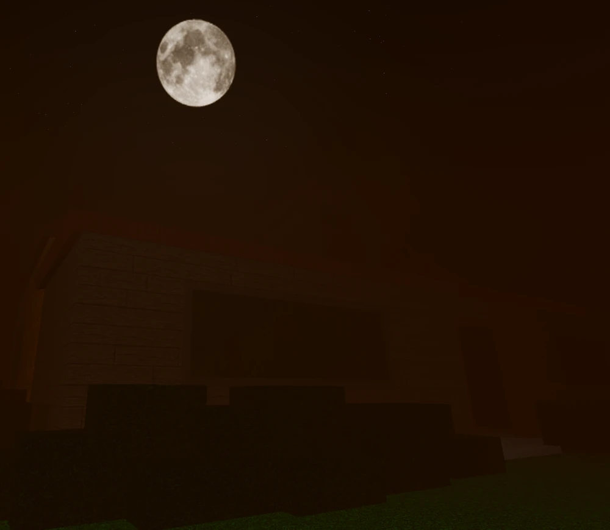
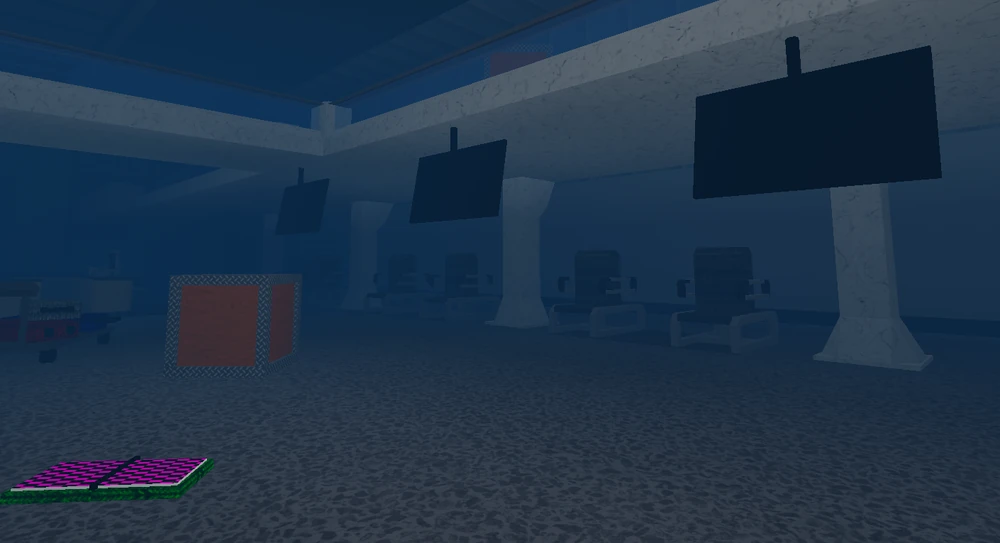
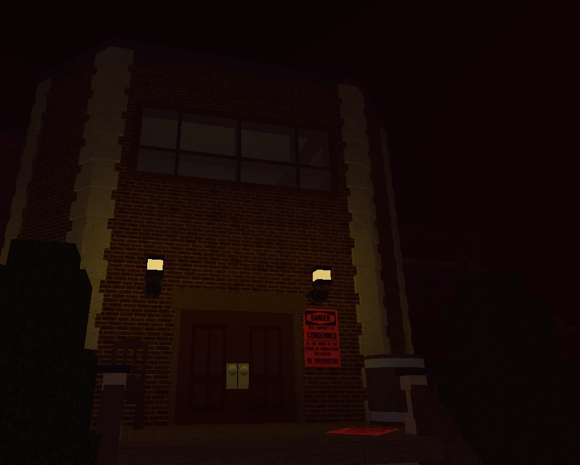
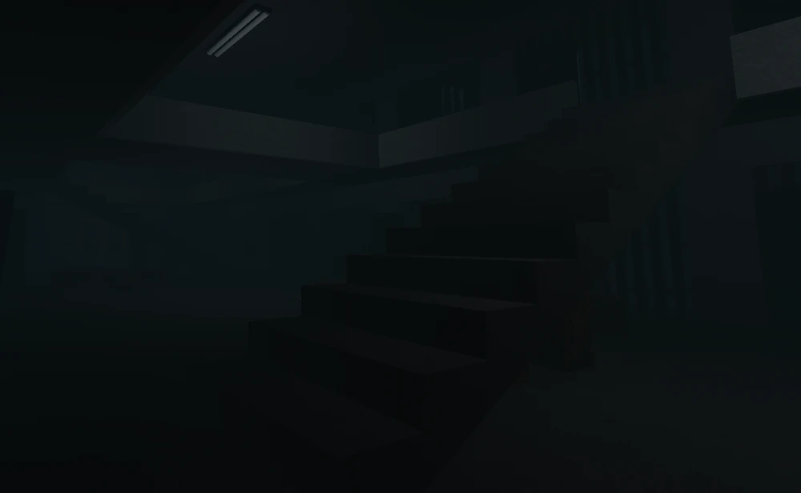

Flee the Facility is a Roblox game with over 5 billion visits. This game was created by Andrew "MrWindy" Willeitner and inspired by Dead by Daylight. Its focus is for Survivors to escape a map while avoiding the Beast, who captures and freezes the Survivors in Freeze Pods. To escape, the Survivors need to hack the prerequisite of computers to unlock the Exit Doors. If a Survivor gets captured by the Beast, the other Survivors in the game must free them. After a round, players are rewarded with credits, which can be used to buy items from crates, or during events, credit bundles, which grant different skins of hammers and gemstones.
In this game, only a maximum of 5 players will be allowed on a server. Before the game starts, players will have to vote on a map. During the intermission between rounds, players can vote for one of four maps in the Camp Lapis lobby. Whichever map has the most votes will be the map the next round is played in. The Beast is a role which is the main player/antagonist in Flee the Facility. Anyone not chosen to be the Beast will become a Survivor. Survivors can crawl, allowing an alternative entrance/exit through vents. They can also Double Jump every three seconds. The Survivors must work together to hack computers that will unlock the exit while avoiding the Beast. They have 15 minutes to escape, with a 15-second head start before the beast spawns. If the Beast hits a Survivor, they get knocked out. Other Survivors can then run over and help them get back up. The beast wins if they freeze all the Survivors before they can escape or if the Survivors run out of time. The Survivors wins if they are able to escape in time.
| Map Name | Creator(s) | Icon/Image | Release Date |
|---|---|---|---|
| Facility_0 | MrWindy |  | July 1, 2017 |
| Homestead | MrWindy |  | October 18, 2018 |
| Airport | deadlybones28 |  | September 14, 2019 |
| Haunted Mansion | BreifAwesomeDude |  | November 8, 2022 |
| Abandoned Prison Maximus | SonicUnkn0wn, D4niel_Foxy, mace_nasty |  | March 17, 2025 |